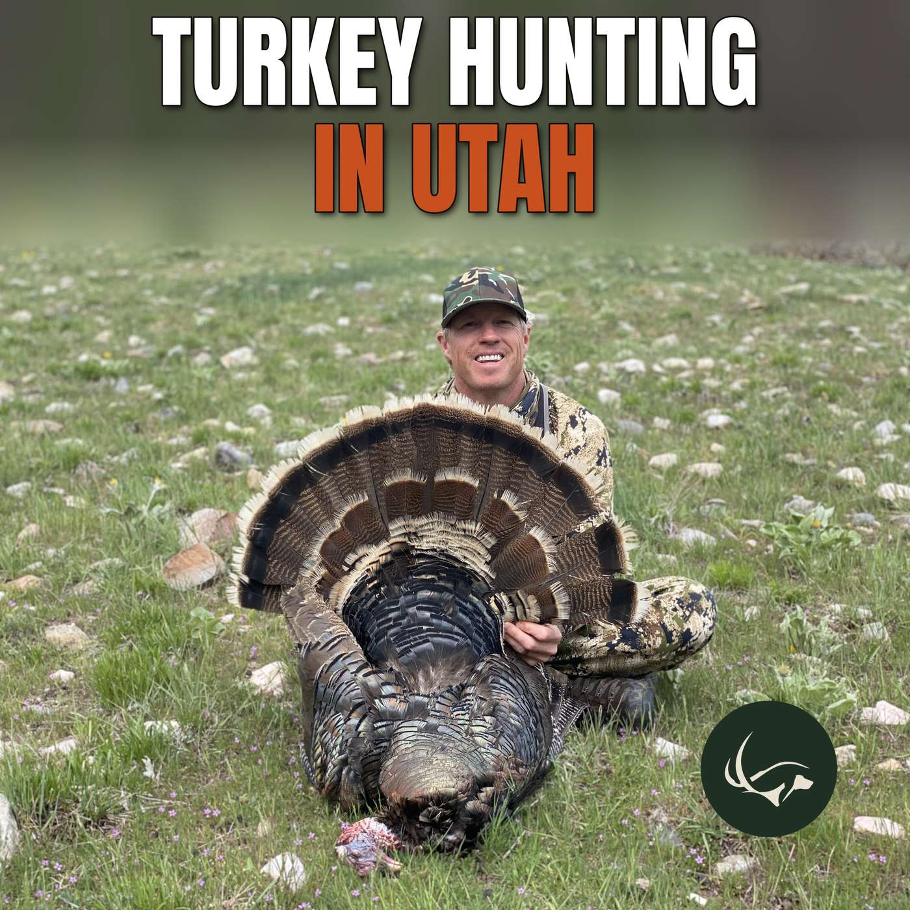

Episode 71 · November 24, 2026 · 55:59
Turkey Hunting in Utah: History, Fun Facts, Tag Draws & Finding Spring Toms

About This Episode
Happy Thanksgiving from Bird Dogs & Big Game! In this solo episode, host Tyce Erickson of Utah Bird Dog Training talks turkeys and turkey hunting in Utah. He covers how wild turkeys came back in Utah, from the first seven Merriam's brought in from Colorado in 1952 to the big transplants of the 2000s. He shares fun facts to quiz your hunting buddies with, explains how Utah's spring and fall hunts and limited-entry draw work, and gives his best tips for finding and calling in a spring tom.
In this episode:
Always check the current Utah Division of Wildlife Resources guidebook for dates and rules before you hunt.
Host: Tyce Erickson, Utah Bird Dog Training
The Gunshy Fix Introduce your dog to gunfire the right way, or help work through an existing gunshy issue with The Gunshy Fix. 👉 The Gunshy Fix
Kuranda Dog Beds Kuranda Dog Beds
ALL American Canine ALL American Canine (Promo Code: UTAHBIRDDOG)
Gunner Gunner
NuVet Supplements NuVet Supplements (Order Code: 56496)
Paradigm Sporting Dog Paradigm Sporting Dog First Aid Kits
HOSS Straps HOSS Straps (Promo Code: UTBD15)
Questions about the training topics in this episode? Tyce works with bird dog owners and hunters through Utah Bird Dog Training. Reach out to work with him directly.
Resources & Links
- The Gunshy Fix — Sound conditioning program for gunshy dogs.
- Kuranda Dog Beds — Elevated, chew-proof dog beds built for working dogs.
- Gunner — Crash-tested kennels, bumpers, and gear for working dogs.
- NuVet — Cold-pressed supplements for optimal dog health.
- All American Canine — Made-in-the-USA treats and supplements for working dogs. Promo code: UTAHBIRDDOG.
- HOSS Straps — Weatherproof dog collars, e-collar straps, and gear straps. Promo code: UTBD15.
- Paradigm Sporting Dog — Veterinarian-designed first aid kits for bird dogs.
- Utah Bird Dog Training — Tyce's professional training services.
- Field Bred Golden Retrievers — Tyce and Rachel's golden retriever breeding program.
- Utah Pointing Labs — Tyce's pointing lab breeding program.
Transcript
Full transcript for Episode 71: Turkey Hunting in Utah: History, Fun Facts, Tag Draws & Finding Spring Toms.
Tyce
Hey, everyone. Thanks for tuning in today to the Bird Dogs and Big Game podcast. My name is Tyce Erickson, and,, I'm the host of this show, so thanks for taking some time to listen, and hope everyone's having a great day and, , getting ready for Thanksgiving. So today in this podcast, I wanted to talk about turkeys and turkey hunting here in the beautiful state of Utah. And,, I'm not, again, trying to encourage a bunch of hunters to come out here and hunt, but, you know, there's, there's a lot of turkeys out here,, to a certain degree. I mean, I say a lot. I've never hunted any other state for turkey, so I don't know what a, a lot is. Maybe in a bunch of the other states there's,, there's way more, which I imagine back east there's way more turkeys. But there is opportunity,, in the western states for turkey hunting, and,, and, I, I mean,, and so that's just,, I don't think that's something new to a lot of people. But if you're interested in hunting turkeys, there is some opportunity, which is pretty cool. So, hey, just wanna say thanks this time of year with Thanksgiving for listening to the podcast. Really appreciate it. , hope you guys all have a wonderful Thanksgiving with your families and get to spend some time hopefully doing some hunting,, with your dogs or whatever it may be. If maybe, maybe you have a rut tag and you're out hunting deer this time of year too, that's pretty awesome. I have a buddy I know, he's back, he's hunting whitetail,, during the rut. That sounds really fun. And,, just hope you guys… wish you guys all a wonderful, happy Thanksgiving. And,, so in the meantime, I just wanna talk about some people and some companies that help,, you know, help out with the show. So,, All American Canine, I want you guys, if you're interested in some awesome,, whole food, again, just like the name All American,, all these,, dog treats are sourced on American farms,, which is cool, and it's, it's a whole food. So something as I get older, I notice the way food affects how I feel more. So if I'm eating a lot of processed food, a lot of junk food, I just, I don't feel good. And so I try to eat as much as possible. Now, I'm not perfect,, but I try to eat as much as I can whole foods. So just the way, I like to think just the way God created it, that's the way I try to eat it. If it came out the way God created it, that's the best thing for my body. So All American Canine, they have some the way God made it treats. They're just,, dehydrated,, freeze-dried, so all that nutrients is condensed down. It doesn't have a funky smell or anything like that. Maybe you'd think they would, but I mean, they don't smell like perfume, but they don't… You know, the fish and stuff like that, you, I, I… When I open them up first, I'm like, "Whoa, are these gonna smell just like," you know, it's like some nasty fish or whatever And they, they didn't. They ha- they-- however they do it,, I guess maybe that freeze-drying process takes that out. But it-- the, the way I li-, so they don't… Anyways, they don't have that smell. So but you can break off little pieces. I've tried pretty much every one of their treats that they have, and,, I've been impressed. The dogs love them. , now they are kind of bigger treats, so you could use them as like… I don't know if they'd necessarily be the-- if you're trying to-- necessarily the best for treats, but if you're trying to do treats, I'd probably get like the minnows because those are small, and there's a bunch of them. So you could use those as like a whole food treat. Or if you get the bigger ones, you know, you can break them up in pieces. But they have like some whole duck heads that are frozen, like whole feet, whole necks. Those things I would give more like you're getting out hunt-- you're going out hunting, and you wanna give your dog. It'd be kind of like us eating some jerky on the trail, right? Like your energy's getting a little low. Hey, here's a, a duck head or some duck jerky or a duck foot. And I thought when I first bought them, like, ooh, I wonder if these like splinter or anything like that. But I've had zero digestible issue-- digestive problems with my dogs on them. I think where they really dehydrate them, it makes those bones,, pretty brittle, and the dogs just chomp them up, and I've yet to have any issues or, or heard of anything. So if you guys get them and try them out, and there's any negativity to them, let me know,, 'cause I wanna only want to talk about companies on here that we, that we believe in. So check out All American Canine. Use the code UTAHBIRDDOG if you shop there. , that helps us out. , but allamericancanine.com, UTAHBIRDDOG, all caps. That w- that's the promo code there. , if you're looking for,, a really good supplement, NuVet Supplements. The NuVet Plus is just a good daily supplement that's cold press, has a bunch of good stuff in it. You can give your dogs. The order code is five six four nine six. You can't buy it on the shelves. You gotta buy it on their website. And if you go to the link on our show notes, that,, that helps us out. So,, and then Paradigm Sporting Dog First Aid Kits. If you're looking for a really,,, a first aid kit for your dog, or you have a buddy that has a dog, and you're like, "Man, I'm looking for-- I want a Christmas present that I could give him,", check out Paradigm Sporting Dog First Aid Kits. There's a link on our site there too. And then,, you know, something recently I run the Garmin Pro 550 or mostly Garmin stuff. , I'll run, you know, the Sport Pro, Garmin Pro 550, Pro 550 Plus, the Alpha, those different c-, collar systems made by Garmin. , one thing I don't like, especially the Pro 550 Plus when we're doing a lot of water work,, that's the PT10 I believe is what the, the actual name of the receiver is. But the collar strap on that for the Sport Pro and the Pro 550 Plus at r- or the Pro 550, it's the same collar. So not the box, but,, the box and the collar is the same, it's just the transmitter's different. But anyways, that collar on the receiver, over time that collar will delaminate, and so you're gonna have to replace that. So go ahead if you'd like and use that one until it's done. But when you're ready for an upgrade, check out HOSS Straps, H-O-S-S Straps. Look them up and their promo code is… Our promo code there is UTBDT15. So,, check them out, UTBDT15, and I believe that gives you a discount there, helps us out. , but,, yeah, they're, they're a great strap. I've yet to have one, like they don't delaminate. They're delaminate. They're a different material and,, they also have like a one-inch strap with like these, Little attachments that you can hook to your, to your e-collar, or they also make a three-quarter strap that you will weave through where the old existing strap is. So,, go ahead and give them a looky, looky-loo if you want. , Kuranda Dog Beds, if you're looking for a kennel cot,, they make a, a great kennel cot. I run the aluminum ones, the aluminum frames. I don't like things that dogs can chew to pieces, and that kennel cot or cot you can put in your house. You don't have to put it in your kennel. But that is going to… The aluminum, yeah, they're pretty much indestructible. So the beds, occasionally, if you get a dog that's-- Over the years, I'll have some of the beds wear out. Anything like that, that a dog can scratch on and try to get to, eventually… I mean, again, these are the toughest ones I've found. I've had dogs completely destroy a cot in one night, a different brand. Put it in there, went out, the thing is in shambles. So these ones usually last years. I have some that are years old and still no holes in them. But if you have a dog that's super digger, whatever, maybe they can eventually work through them, but it's no big deal. You could just buy a little replacement pad, you undo some bolts, some screws, do, do, do, do, and you pop the new one in, and thing is, like, brand new. So,, you,, you can do their ballistic vinyl. The thing I don't like about their ballistic vinyl is if you're spraying down your kennels, there's not a drain in them. So you can check out the perforated ones. Those are probably not gonna last as long. I've actually had really good luck with them, even being perforated with the small holes for drainage for your cots. But the ballistic vinyl, I've actually, on some of them, where I've seen where water pools up, 'cause sometimes it is kind of annoying. You gotta take the cot and, like, you know, if you spray water on it, you gotta, like, turn it so it, like, runs off. If you have a handful of dogs, that gets a little annoying. So if you have the perforated, you can just spray it, and then it just drips down through. It's no big deal. , but if you get the ballistic, I, I've, I've actually… I don't know if they advise against this or whatever, but I'll take actually a drill bit and where I get little puddles, I'll just drill a hole in there, small holes for drainage, and that seemed to work pretty good too. So,, but check out Kuranda Dog Beds, K-U-R-A, K-U-R-A-N-D-A dogbeds.com. Check those out. Give them a look. And then the last thing I want to talk about gun-shy dogs. There's nothing worse than a gun shy dog, and so you want to try to do a proper gun shy introduction. But if you want to ease your dog into guns, you w- you have a dog that has gun issues, and you don't have the birds, and you don't have the time and the helper to help you transition that dog, check out Gun Shy Fix. I created that to help dogs that just need kinda more of a desensitization approach in a comfortable environment. That's the key. So when your dog's having a good time, hanging out, sitting in his crate, sitting in the laundry room, wherever your dog sits, and you buy the c- Gun Shy Fix, you just play that over and over and over, and it's very calming, and it slowly mixes gunfire in, and the dog's like, "Oh, this is okay." And it just basically rewires the brain. And then you take that out, and you take it outside in the field where maybe your d- dog had a negative experience. You have your speaker. You play that as you're out in the field or in your yard doing retrieves, and the dog's like, "No big deal. I'm good with gunfire." And then you start off with gunfire at a distance, and you slowly work in until your dog is doing great with guns again. So don't give up hope completely on your dog. There is hope. So try everything you can before you just say, "Man, my dog would be a good hunting dog, but he's gun shy." I I have a booth at the Western Hunting Expo here in Utah in February, and hopefully you guys can come out and see that. But man, that's so frustrating when people come up and say that, and I, I hear it quite often, "Man, I have a good dog, but he's gun shy." Or, "If I didn't make him gun shy, he would be such a great dog." And so a dog like that, maybe give it a try. It's like 40 bucks. I mean, you,, you know, McDonald's is almost, swear, 40 bucks almost by the time you buy, you know, a couple meals or whatever, you know? So, or you take your kids out and a couple of your kids and your wife and you're easily at $40, right? So give it a try. You know, obviously it helps us out, but I really built that to help your dogs and,, and try to get those dogs that are, have gun issues through it. And it's also great too if you wanna play around your puppy. You got your new puppy home and you're just like, "Hey, let's play some…" The Gun Shy Fix, it's just gonna help them get comfortable with the gunfire, and when they hear that gunshots going off in the future, it's already positive in their brain and life is good and they're just, you're off to the races. So the very basics, the basic making of a good bird dog, right, is guns and birds. If they're excited about birds, excited about retrieving, and you can get them good with gunfire, man, you're off to the races. So,, anyhow, thanks guys. If-- give us a follow too if you wanna follow us. My training website is utahbirddogtraining.com. If you need help, if you're like, "Man, I don't have time to train my dog. I don't know what I'm doing," and you have a pointer, a retriever, mixed breed, whatever you want, we do obedience training. We do, you know, pointer training, retriever training, versatile dog training, whatever you want, we're here to help you out. Been doing this for 20 years, seen a lot of dogs, all the major breeds, some of the rare breeds. , so we,, we're gonna do our best, work really hard, me and my small team, to help you turn your dog into that, that,, hunting companion you've always dreamed of. So,, also fieldbredgoldenretrievers.com. And again, you can follow us on social media. We'd love it if you'd give us a follow there. Utah Bird Dog Training, Field Bred Golden Retrievers, and Utah Pointing Labs. My Utah Pointing Labs website is a little outdated. I had a couple of my females that are still,, transitioning, and so once we're-- we'll update that when we have some lab litters coming up. We just did have a, we had a, a golden retriever litter just born two days ago, so that's been fun too. , fun and stressful at the same time. You're trying to keep an eye on these pups, make sure, we had 10 of them, so it was a big litter. And so when you get those bigger litters, you're a little worried about one getting left behind. So we're trying to keep an eye on those pups and make sure they're all balanced out and,, good to go, getting mama's milk and growing and, and eventually get into some great, -, hunting outdoor homes So, , thanks for listening, everyone. , hope you guys, again, have a wonderful Thanksgiving, and, , let's get on with the show Hey everyone, welcome to the Bird Dogs and Big Game Podcast. My name is Tyce Erickson. I'll be your host today on the show, and,, thanks for listening. Welcome. , Hopefully everyone's having a great day. And,, with,, Thanksgiving coming up this,, here in the near future, today on this show, I wanted to talk about turkeys. So if you listen to this show after Thanksgiving, there's still a lot of information on here about turkeys that I'm gonna share with you guys, so hopefully you enjoy it and we have a good time today talking about turkeys, turkey hunting. Now, a little bit about me. I grew up in Utah, so I've been here for my whole life, and,, it's been fun to see turk- the turkey population here in Utah increase,, over the years. So I don't remember seeing a turkey when I was a young kid very often. They were really rare. We didn't have any hunts. And I think my first turkey hunt, if I were to guess when I hunted them, I was probably Oh, I was probably in my teenage years. Right now I'm forty-five, and that was, … Yeah, I was probably a teenager when I first drew my first turkey tag, which we-- Utah still has a limited entry draw where you can put in and draw, but that used to be the only hunt that we had, was you would draw the tag and,, you know, then you could go out and go hunt the birds. But then they added the general season,, turkey draw, which,, obviously was just the general hunt, and that opened up aft- that opens up now after the limited entry hunt. So usually a w-, it's about a couple of weeks before you can hunt. The limited entry essentially just allows you to hunt earlier when the, the birds are more in the middle of their breeding season, and then the general season opens up, so you just have less pressure. You get first crack at the birds, and that's our limited entry season here in Utah. , so the general season tags are unlimited in the spring. So if you wanna hunt a turkey in the spring in Utah, you can just go buy one over the counter, non-resident, resident. You can go ahead and, and pick one of those up. And then the limited entry, obviously, they have to be drawn, and some of those areas can take a while. My last, I was hunting the central unit here in Utah, and I think I had six years of putting in before I drew. So the central unit, I would say, takes quite a few years to draw because they're… you're close to a popula- a larger population of people, so I think more people put in,, for this area compared to maybe northern Utah or southern Utah. Don't quote me on the facts. I didn't search up,, what it takes to draw,, but I'll actually maybe type that into my phone right now, what it takes,, to draw a tag To draw tags in the different units here in Utah. To draw tags in the different limited entry, in the different limited entry units in Utah So I'm gonna go ahead and plug this into my phone here and see what it says. So we're just, we're, we'll just learn here together All right. So it looks like,, in northeastern Utah, you're averaging about two points. Northern Utah, two points. Southeastern Utah, three points. Central Utah, four. Mine took five or six. I don't… These are, these are what the twenty twenty-six results it says. Central Utah, four. Southern Utah, four. , and then it has some, like, CWMU units, which is a Cooperative Wildlife Management Ut- unit, which is essentially private land where you can get some private land tags to go and hunt those, and those-- one of those took nine and ten. The East Zion unit, ten points. Pahvant Ensign unit, nine points. So there must be some big birds on there. If people are birding that many points or that many years to, to shoot a turkey, so, … But anyhow, so you can put in for those limited entry unit tags, go hunt them a little early, and then you can hunt the general season units. And honestly, the general season units, if you do your home- do your homework, and you do your scouting, you can still harvest birds. I had,, a couple,, clients came out, and they put them into some of my honey holes. I said, "Don't share them with others," so hopefully they'll keep that in, on the quiet side, and they both ended up harvesting,, nice toms on our general turkey hunt. So we do have,, a decent amount of,,, turkeys here in Utah, and the population is growing. That's fun. We do have a early sea- a youth hunt. , so we have the limited entry hunt. That goes for on average, ah, man, I think it's about two weeks roughly. Again, if you want to find the details of that, but it goes about two weeks. Then I think it, there's kind of a br- it ends, like, on a Saturday or Sunday. Then you kind of a week break, and then they have the youth hunt, which starts, I think it's Friday, Saturday, Sunday. So you have three days where just the youth can hunt, under eighteen can go out and go hunting and,, harvest. We only can harvest one tom bird, one male bird here in Utah. , it can be a tom or a jake, but one male bird in Utah, and then after that, the,, the general season kicks in on Monday usually, and then you can, you know, obviously harvest one bird,, a season on that. So,, I have pretty much… There was a little-- I used to-- I still love hunting turkeys, and I try to hunt them every year. I harvested one. Did I get one this year? I've pretty much harvested a bird every year since the general season hunt has started here in Utah. There was one year I had a really busy spring with hunt tests and, and, - With dog training that I didn't get out and harvest a bird. I think maybe one or two seasons, but I'd say probably in the last 12 to 15 years, I've taken a bird every year, either a Jake or a Tom. I've harvested multiple birds with my archery equipment, with a bow and arrow,, spot and stalk from archery from blinds. , and then I've… And then the rest I've shot with,, shotguns. My boys harvested,, turkeys with, with a .410. He's harvested three Toms with a .410 single shot shotgun. So we-- I, I kinda have fun playing with them. , I've shot most of my-- The last ones I shot with the 20 gauge over under,, and then archery equipment, and then just,, the old 12 gauge. So,, in the state of Utah, we have Merriam's and we have the Rio Grande. So your,, Merriam's, they're gonna have more of that creamy white tail tip, and then the Rio Grande are gonna be more tan or buff colored tail tips. So,, and they will, we-- Well, they'll, they'll intermix, they'll crossbreed. So in some areas I hunt, you can be, you, you can kill either one. So,, and I, and I-- From what I understand, they will crossbreed, so you may get, you know, they'll just tran- You'll, you'll-- You can get either one, which is kind of exciting. , in the very beginning, I didn't really know, know, you know, which one was which. I didn't really care, honestly. I was just, if it's a nice male Tom turkey, I'm, I'm gonna harvest it, you know, if I have the opportunity. But,, they're both really cool birds. , the, the Rio Grande, they,, they've been pretty impressed, the population, because,, some of them have adapted to living In unusually, unusually high mountain elevations, which generally they're more down around the river bottoms, like the Rio Grande River that I assume they're named after. But,, around the river bottoms and cottonwoods and those areas, and they still hang out in there, but I've killed Rio Grandes and seen them way up on the face of mountains and,, in the pines and, and high up in areas like that where they typically wouldn't be. Where the Merriam's, they do better at going… They prefer the higher mountain forest, the Ponderosa pines,, and they, they just like that higher elevation, you know, for those, those birds. So,, so they're both really, really cool species. I want to get into to hunting these birds. , we,, just,, some interesting fact about the, the wild turkey is they can fly. What's your guess? How fast can they fly? They can fly fifty-five miles per hour for short distances. So I don't know if any of you guys have ever hunted them and flushed a turkey. I've shot multiple turkeys actually out of the air and,, they are a big target, so they can, … They're not ultra-- they're not too hard to hit, but they are fast. It's amazing how fast they can go from startled, you know, to getting out of there and,, and, and get on their way. So you got to be on them. You got to be on them quick with that shotgun, otherwise you might not get a shot. And then you got to make sure it's a tom. , if you haven't hunted them a lot and you do shoot one out of the air, you got to make sure you know, you know, kind of what you're looking for. , another fun turkey,, fact that,, I'll ask you guys is approximately how old can they start flying? So da, da, da, da, da. They can start flying at about two weeks of age. So they can start escaping predators and getting away, so they get those little flight feathers in. If I were to guess, probably I would guess game birds in general are about that. So pheasants, quail. I've raised pheasants, I've raised quail, and they're about that same. Pretty quick that down starts popping off and those little wing feathers start coming in, and once those wing feathers come in, they are on… off the ground. When was the first bird brought into Utah? And according to what I have looked up, it was 1952. So,, in 1952, they brought in from Colorado, seven Merriam's. So,, and then, so 19-- and then they brought some in from Arizona. The Merriam's from Ari-Arizona. Kansas, they said, it says likely they brought in,, they were Rio Grandes likely, so they didn't really have the notes, but there was 71 confirmed turkeys brought in in 1999. Oklahoma, 271,, Rio Grandes that from 2003 to 2004. , so basically in 19… I think it was 1989 is when they started really,, let me look here at my notes really started bringing them in to Utah Yep, 1989 was when they began their major turkey trapping and relocation program here in Utah. So again, I was born in '82, so again, I don't remember seeing really many birds, and it seemed like, again, I've harvested my first turkey, I think, when I was a teenager. So 1989, that's about 10 years, 1990 to 2000. So yeah, that, I mean, that, that follows track of when I started seeing these birds more on the landscape. ,, Oak and then South Dakota, they brought in 127 Rio Grandes. South Da-, South Dakota, again, the 1990s,, they didn't… There's an unverified number. Texas, they brought in some Rio Grandes from two thou- in 2003, 313 of them. , more in 2025, they brought 25 more from,, Texas. And then Wyoming, they were, they brought some Merriam's in, but they were unverified on,, on the, the amount that were brought in there. , something that is, Interesting is,, the population of turkeys in Utah. So… Well, I'm gonna go back and ask, and, and talk about this. Why is the Merriam wild turkey-- It was, it was named in honor of Clinton Hart Merriam, who's an American zoologist, naturalist, and ornithologist. , in the 1900s, Edward William Nelson officially named subspecies after Merriam in recognition of his contributions to wildlife science. , Merriam, Edward William Nelson,, in honor… , let's see here. In 1900, Edward William Nelson named the subspecies after Merriam. So, so this gentleman, Edward, in 1900s, in honor of Clinton Hart Merriam, who was… who lived from 1855 to 1942. So that's interesting. I didn't know that, that it was named after Clinton Hart Merriam, an American zoologist, naturalist, and ornithologist. But it was,, but it was,, it was,, officially named, , by Edward William Nelson, who named it after that guy. So,, Merriam, this, this gentleman that was… lived in 1855, 1942, he was the first chief of the US Biological Survey and predes- predecessor of today's Fish and Wildlife Service. He was a founding member of the National Geographic Society in 1888. He pioneered the concept of ec- ecological li- life zones based on elevation, climate, and vegetation. Several other animals were named after him, including the Merriam's elk, which is now extinct, it says, the Merriam's chipmunk, and Merriam's ground squirrel. So,, that's kinda cool. Some, some food for thought there. So, all right. Question, if you're listening. How many population-- How many turkey do-- turkeys do they estimate are in Utah? So I didn't know this before I looked all this up. There's an estimated thirty-three thousand to thirty-eight thousand wild turkeys now in Utah, according to the Division of Wildlife Resources from in April,, as of April 2026. So,, that's pretty cool. Let's see. Some other interesting, fun turkey facts that you guys can hopefully learn from as I share these with you. They can run up to twenty-five miles per hour. Most of you, I'm sure, know that turkeys sleep in trees. They have the roost,, and we'll talk about that more here in a little bit on, on hunting turkeys and kinda what I've done to find success on turk- on hunting these animals. , turkeys approximately there's two hundred and s- they have two hundred and seventy degrees of vision. They see in color and are exceptional good at detecting movement, hence why when you hunt turkeys, your camo is very important. So when I, when I'm hunting turkeys, along with most people, the best way if, especially if you're calling them in, you need to avoid them seeing you, and that's why you wanna blend in really good, have a good backdrop, have a blind or something in front of you, as they can see very well with those eyes. And where they can see in color, that's why I will typically wear gloves. I'll wear, you know,, face mask, everything just to cover up all your skin. So,, and another interesting fun fact, an adult wild turkey has approximately five thousand to six thousand feathers. And then I didn't know, I didn't know this before I looked this up, how many tail feathers that… how many tail feathers it has, does it have that makes up the distinctive turkey fan, and it's approximately eighteen tail feathers form that distinctive fan. , many of you may know,, that the turkey's head will change colors. The tom's head changes colors depending on its emotional state, and,, it can be bright red, white, blue,, all sorts of different colors, which is really cool, and then they have that thing on their head called the snood,, on their face. That's really interesting. And,,, I'm actually while, while we're talking about this, , I'm gonna put in my phone o-over here what is the snood for I don't even know what the snood's for. Maybe there's no reason. All right, it says,, "The snood is a fleshy appendage that hangs down over a turkey's beak. Its primary purs- purpose is sexual attraction and communication. , research has shown that hens generally prefer gobblers with longer snoods." Interesting. "Indicating health, longer snoods are associated with better physical condition and lower parasite loads." Okay, that's,, new information. "Establishing dominance, male turkeys assess each other's snood length when determining social rank." Interesting. , "Regulating temperature, its rich blood supply help may dissipate body heat, and then communicating excitement. When a gobbler struts, the snood fills with blood and elongates. When alarmed, it can con- rapidly contract. Both hens and gobblers have snoods, although males are considerably larger. A matu- mature gobbler snood can extend several inches when displaying." That is interesting about the old snood on the turkey. So,, a little more interesting facts on turkeys here that I'm gonna share with you guys, and then we'll get into hunting, hunting turkeys. But,
We talked about,, you know, baby turkeys, they're gonna eat, you know, just grasshoppers and acorns and seeds and berries and grasses and agricultural grains. I think that's not really too much,,, groundbreaking science there. But,, wild turkeys have different names depending on their age and sex. I think most people, if you've hunted turkeys, know some of these, but maybe you don't. So an adult to- turkey male is called what? It's called the tom, right? We're gonna go hunt toms. I think most of us turkey hunters know that. The young one, the juvenile male is called a jake. An adult female is called a hen. And then the juvenile female is called a jenny. I've heard that before, but I didn't remember that before kinda looking up some fun facts to share with you guys. And then a baby turkey, I think a lot of us, I would say, unders- knows what this one is. , the baby turkey is a poult. And then this one, this is the first time I have heard this today, so if you guys know what a flock of turkeys is called, then,, then good on you, 'cause I just called it a flock of turkeys. What is a flock of turkeys called? I did not know this until today, and I've hunted turkeys, you know,, since I was a teenager, like,, what, 25 years or something like that. So this is new news to me, which is kind of fun. I'm gonna share with you guys what that is right now,, since you guys have been holding on and waiting. A flock of turkeys is called a rafter. I had no clue that that was what they were called, rafter. So you can quiz your buddies that are hunters and turkey hunters with you and be like, "Hey, do you know what a flock of turkeys is called?" A rafter. Interesting. I had no clue that's what they were called. I just said, "Hey, there's a flock of turkeys over there." So anyways, fun fact. All right. , another fact here about turkeys in Utah, in 2014, Utah brought its fall turkey hunt back,, with approximately 30 years without having a fall turkey hunt, which allows harvest, which allows hunters to harvest a fresh, locally sourced wild turkey for Thanksgiving dinner. And,, that, that's pretty cool. That's co- It's been really fun. Turkeys has been… Turkeys and having them on the po- on the landscape has been,, what's the word I'm thinking of? It's been,, a con- con- conservation, conservation success, right? Without… We didn't have turkeys here. Now we have turkeys. They're doing awesome. We've had a spring hunt. We had a spring hunt for a while where it's just limited entry tags or just a draw tag. You could get a tag. Now we have a general season spring, spring turkey hunt. Now we have a fall,, turkey hunt. So the fall turkey tags are first come, first serve. , they do have private land tags where you can get them and hunt them on private land. But unfortunately,, I keep missing those. I've had, I've, I've gotten them over the years,, and my kids really enjoyed them. We used to be able to get, we used to get some fall turkey tags, and I need to get back on the train and remember when they go on sale because they, it's a first come, first serve. At least that's how they used to be. I didn't check before I did this,, episode. But,, you had to get on and get them first come, first serve, and, and you could shoot them with something that's interesting. In the spring season, you can only hunt, use archery tackle, or you can use a shotgun. In the fall season, you can use… And again, check, check all these rules before I go out. But from my understanding, you can use a shotgun, you can use a .22, and you can use an air rifle. So air rifle, shotgun, .22, which is really fun. My f- the, some of the first turkeys my little kids harvested,, were on the fall hunt with .22s, and you could hunt hens or toms. And so it was a way, I think, just to put a little pressure on turkeys when they got down on private lands or close to private lands, and you could,,, hunt them with rifles, which is fun for kids. You know, you can drive around and you see a flock of turkeys,, a rafter, and you can go out and go after them and,, and try to make it happen, you know? So,, that's, that's a little information about the fall hunt. - I'm gonna talk to you, talk, share with you guys about our fall turkey permits by the year. In 2014, the fall season was the first year they offered it, from what I remember, and there was 314 permits given. 2015, 700. 2016, 1178. 2017, it came down, 881. 2018, this is-- these, again, these are fall permits. We had 3,415, so that was a big jump. 2019, 6,167 fall permits. , 2020, there were 7,710 permits. 2021, 4619. 2022, 2,843. 2023, 2625. 2024, 2808. 2025,, 2517. So and then fall 2026 hasn't happened. So it looks like on average right now we're averaging roughly 2800 fall permits. And there are some that go on private land, and then there's some are the g- that, that are,, some for private land, and then some they do offer for public land. So I know when, when we hunted them, I believe we could kill I think it was three hen turkeys. You could get up to three tags. It was for private ground, but you get three tags a person, and you… They could all be all toms or they could be all hens, and I think they've changed that now where you can only kill a tom and,, only one out of those tags, if it's on private ground, can be a tom, you know, if, if you buy three tags for yourself, and then the other ones have to be hens. So,, spring turkey sales the last five years, kinda just go… Now we're talking about general season. , well, this is a combination. Well, we'll just add them both together, and then I'll k- tell you the difference. No, we'll just do gen… Eh, we'll add them together. Okay, general season, you had 10,000 in 2022, just the last five years. This general season, there was 10,310 tags. , the limited entry tags, there was 1,951, so a total of 12,261 tags. Actually, I'm not gonna do this separate. That just takes too much work. But just total spring tags you have,, for the general season. We'll just do general season 'cause,, those are, you know, that's what… You can just come in and buy a tag if you want, but there was 10,310 in 2022. 2023, there was 10,067. 2024, 11,192. , 2025, 11,789. 2026, 11,847. So it has slowly increased. , 20 t- 2023, it did dip down a little bit from,, the turkey tag purchases. But the last three years on average, most people have averaged, they've been selling between 11,000 and 12,000 general season turkey tags here in Utah, the turkeys harvested, this is kind of interesting is learning about the turkeys and turkey harvest and success rate. In 2022, there was 2,600. , hey, I apologize in the background if you guys hear this, I am a dog trainer. , and,, if you didn't know that already, but my kennel is just out the door here, and sometimes these dogs are barking. So if you pick it up in the background,, I apologize. This is more real and raw, right? We-we're a dog trainer. We got some dogs kind of barking in the background, but hopefully it doesn't distract us too much from our show talking about turkeys. , but in 2022,, we had spring turkey harvest. It's a twenty-two percent success rate. That's,, tw- twenty-six hundred turkeys, roughly. , 2023, again, twenty-two point eight percent. So 2022 is twenty-two point six. 2023 was twenty-two point eight. 2024 was twenty-eight point two. And then in 2025, there was thirty point nine, and then in 2026, thirty-three point six percent. So the incre-- so the, the, the success of harvest has increased from last five years from twenty-two percent to last year, thirty-three percent. So that's pretty good. Almost a third of,, everyone that went out and hunted, you know, hunt- harvested a turkey. So,, so that just shows our population is increasing. The number of hunters hasn't really increased. I mean, the last five years, it's hovered within a thousand or two thousand of each other, but the percentage of birds being harvested is going up So that,, that basically tells us, hey, our bird numbers are increasing and doing, and doing well. So,, something too that's,, interesting, we had a… In 20-- two thousand and three to two thousand and four, there was a massive transplant effort here in Utah. That single winter, they relocated a thousand three hundred and eighty-one wild turkeys. So that's typically what they'll do in the winter. They'll essentially bait them in, and then I've never been on a turkey transplant, but I've seen it happen on the news or divi-divisions page. But they'll basically, you know… I'm sure there's many ways to trap turkeys, but they'll bait them in, and then they'll use like the net guns or whatever it is that shoots the net over the flock of the turkeys, and then they go in and they pull them out of the net. They'll usually bait them with some food, obviously, for a while in the winter grounds 'cause the turkeys will congregate right down low, get out of the snow. They're gonna be down on farmland or down at the base of the, the mountains, and they start feeding them there. And then if they have a, a population that's doing really well, then they'll capture a bunch of them and transplant them there,, during the wintertime. So,, they,, that year in two thousand and three to two thousand and four, again, they were transplanting a lot. Within the state, they transplanted six hundred and seventy turkeys, which is really cool 'cause, like, they keep, they keep transplanting them too, which just puts new population, populations in new places. And,, and Utah in 2003 to 2004, they transplanted again 1,381 turkeys within the state. So they transplanted 670 within the state, then they brought 313 in more from Texas, 271 from Oklahoma, and 127 from South Dakota. 1,242, 1,242 Rio Grandes and 139 Merriam's. So that was a big effort to really put a lot of turkeys in different places in the state of Utah, and man, we're, we're seeing the reward of that. So that's really cool. Some other interesting fun facts about turkeys is Utah, this is kind of fun, Utah sent elk to Kentucky, Kentucky then sent eastern wild turkeys to South Dakota, and in return South Dakota supplied Utah with Merriam's and Rio Grande turkeys. Utah has also traded pronghorn to Texas for Rio Grande turkeys, and Texas has donated turkeys simply to help Utah establish its populations. So that's kind of fun how they just kind of went, "Hey, I'll, I'll trade you some elk." This we have-- It's kind of like Settlers of Catan, if you guys ever played that game. It's like, "Hey, I'll give you some wheat for some ore," and then you can, you know, you're just trading stuff to, to make it work. So obviously they have a lot of surplus of turkeys, we have a good surplus of elk, and so they go ahead and just trade those around. , before we talk into about hunting turkeys, and again, I am,, not a professional turkey hunter, but again, I have… I, I keep saying but again, but I have hunted turkeys in our general season and limited entry season for over 20 years, and every year I've harvested, , a turkey in the spring season, except for a couple years, and there was a couple years I just kind of ran out of time and I didn't get to put much effort into turkey hunting. But if you are doing our limited entry draw tag hunt, those,,
those tags… Sorry, I had to get a drink of water here. Those tags, 50% of those will go into, if you put in, will go into a random draw. So if you just put in, you have one point in there, it takes four points to draw. , you could potentially still get a tag, and then,, 50%, the other 50% will go into,, the, the highest points. So if you have the highest points, 50% of those tags are gonna go to that, 50% go to the random draw. So it's still beneficial to put in for,, you know, turkeys if you don't have points. Just put in. Don't buy a point, but actually put in because you still have a chance, and that's how Utah's draws are, is you still have a chance to draw,, even when you, if you put in for like our big game tags and stuff, you can still get what we call the random draw. So,, our application period opens on December f- opens up December 15th, so actually it's coming right up, right around the corner this next month and a couple weeks out. The deadline is December 29th, and draw results are posted January 7th, and then your over-the-counter tags go on sale March 11th. Then limited entry hunt for 2027 have the dates here as April 10th To the 29th this year, this coming year. The youth hunt is April 30th to the 2nd, so that actually isn't a week break. It's April 10th to the 29th is limited entry. April 30th to May 2nd is the youth hunt. So limited entry closes, next day you got three days of youth hunting, and then our general season is pretty much open the whole month of May, which is cool. It's a long season, May 3rd to the 31st. So depending on the spring season and weather, sometimes those birds are gonna be, you know, still gobbling really good,, you know, during that general season hunt. I've had a lot of great talking on the general season,, hunts. So let's wrap up by talking about how you hunt turkeys. The best thing to do I have found is,, well, first just when you're out, you know, in the hills driving around and you see turkeys,, a lot of times you're gonna see them in the wintertime. So those populations are gonna move down off the mountain range. They're gonna be down low. They're gonna be in the foothills, in those areas, and you're gonna see those big flocks of turkeys. So if you see turkeys there, obviously there's turkeys in that area, and then what happens in the spring, those birds are gonna move generally up the mountain. They're gonna kind of follow the snow line, okay? So in the spring, that snow line's gonna slowly go-- fade up the mountain, and those birds are gonna either stop or continually follow that, follow that,, snow line up to a certain, you know, elevation on the mountain. So,, I've seen turkeys up really high on mountains, and I've seen them, , in kind of the lower foothills. But I'd say generally they're gonna follow that snow up, and they're gonna be kind of,, the areas I hunt where it's kind of a Rio Grande, I would say Rio Grande, some Merriam's mixed in, mostly Rio Grandes. They're gonna kind of get up to the pine tree lines, and then that's kind of the foothill pine tree areas is where they're gonna, is where they're gonna end up, , you know, hanging out for the summer essentially or be there for the spring. So what you're looking for is that,, roly-poly hills, kind of scrub oak,, open faces, and then they need an area to roost. So we talked earlier about bird- turkeys roosting in trees. They will roost,, they love like cottonwoods, just big trees that they can get into, but they'll roost a lot of times in pine trees. So if you can find some pine trees on a slope, they don't like to have to fly up. They like to pitch into the trees is, is ideal. So if you can find kind of a steep hillside at the backside of a basin, those birds are gonna go, they're gonna work up onto the hillside, and then they'll just do a little jump, fly right over, and land into a tree. So when you're looking for areas to,, to locate birds That's what you're kind of looking for is your fall out snow line. So I'd start off in the wintertime, see kind of hunt those canyons. They're going to generally kind of work up a canyon or up into the foothills from where you're going to see them in the wintertime. Something I've done is, you know, go out before your hunting season and try to locate the roost. Again, scouting like any hunting is going to pay dividends. So if you can locate the birds, kind of see their patterns. The turkeys around here seem to pattern really well. They'll kind of make a loop. They'll fly out of the roost and they'll kind of work, you know. I like to think they kind of make a circle. Seems like they'll kind of make a circle or go out and scratch around and then they'll make their way back up to the roost for the day. So if you can intercept them somewhere along there, that's going to increase your turkey, your chances of harvesting a turkey. Something I've done is a coyote call or a crow call or a woodpecker call, especially right before dark. , I'll, I'll go and I'll, I'll hit a coyote call, and the birds will shock gobble, right? They'll shock gobble from their roost. And so when they do that, you just wanna pay attention. Okay, there's a bird over there on a roost, there's a bird over there, and you can just locate where they're at and try to find them when they fly up into the tree and, and shock gobble, and then get in close to that roost. So when they pitch out of the roost, you know, try to find an opening or a meadow or somewhere where you can set your decoys up,, sneak in and get in range, and they'll pitch out, and then hopefully either come to your decoys or come past you, and you'll be able to,, harvest, you know, one of those birds. So,, but I would say, yeah, the number one thing is just scouting. If you wanna hunt turkeys, scout. And then number two would be, obviously, if you don't have time to scout, try to locate them on the roost. Make sure you got g- make sure you have a good pair of binos to, to look for them. And then, you know, obviously listen to them if it's a s- if it's a spring hunt. If they talk just like an elk, "Hey, I'm over here," then you're gonna have success. One thing I would recommend, if you're-- if there's an area where you're hunting and it gets a lot of pressure, a lot of people are gonna hunt kind of the lower foothills of the mountain areas, and there are gonna be turkeys down there. There's gonna be some hens, there's gonna be some toms. But I've found the big birds, and not a lot of people are willing to go, is actually when they start getting pressure, they will go up on the mountain. They'll go up high up on the mountain, and they'll kinda stay up on the mountain, pretty steep on the f- on the slopes around the pines and,, and if you can… Areas that most people aren't willing to hike, that's where I'll find some of the big, old, mature toms, and they learn to get up there and stay high in the spring when they're starting to get pressure, and they don't come down much. So,, outside of that, obviously learn how to call. , do your best to, you know, use gobbles and, and your hen calls to be able to bring those birds in and,, and I've called in multiple birds and And, and, , sometimes though you can get birds that aren't very responsive to a call, especially if they've been hunted for a while in the limited entry hunt and the youth hunt and those different hunts, and sometimes the best is just to let a bird gobble, and as he's talking or if you can get him to gobble, then sneak in while he's gobbling and just ambush him. If you're just wanting to get a turkey, that's a great way to get a bird is to… Or you can even get up on a mountainside, and you can glass and locate them and then sneak in on them and harvest them that way. So,, if you're kind of a purist and you're like, "Hey, the only way I'm gonna harvest a turkey is by calling them in," then just practice your calling good. Some guys, that's their gig, and that's,, that's, that's cool. I don't really care how you wanna hunt them. , elk hunting's the same way. Some guys are like, "Hey, I'm not gonna s- I'm not gonna spot and stalk elk. The only way I do it is calling them in." And,, it's, it's your life, it's your game, so you play it, play it the way you want it. So anyhow, well, we gotta go ahead and wrap up this show. I wanna thank everyone for listening and talking about turkeys here in Utah. They are a conservation,, success here in the state. They're amazing birds. , we have,, our population is growing. There's a lot of opportunity, which is fun to have opportunity for these birds and,, you know, Idaho has a great population, Montana. I'm not sure about Wyoming, but all these western states, the populations are doing good and then obviously back east. The cool thing is we do have,, public land out here and,, that you can go and, and give it a whirl and go out there and hunt, you know, with other people or yeah, with other people or against other people or however you wanna, however you wanna look at it. So thanks for listening everyone. Have a great day. My name's Tyce Erickson, and we'll see you in the next show.
About the Host
Tyce Erickson
Tyce Erickson is a professional bird dog trainer and the owner of Utah Bird Dog Training in Utah. For nearly two decades he has worked with pointing dogs, retrievers, and family hunting dogs, helping owners build dogs that are capable and enjoyable in the field. Bird Dogs & Big Game is an extension of that work: honest conversations on training, hunting, breeding, and everything that goes into a life spent working dogs.
More About Tyce